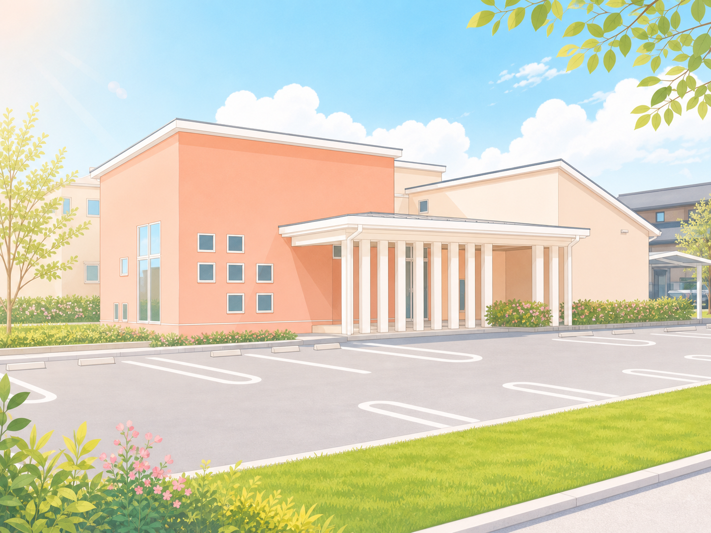
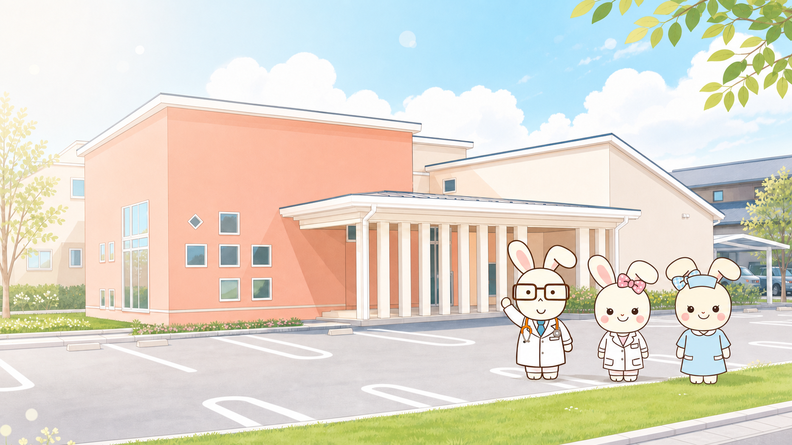
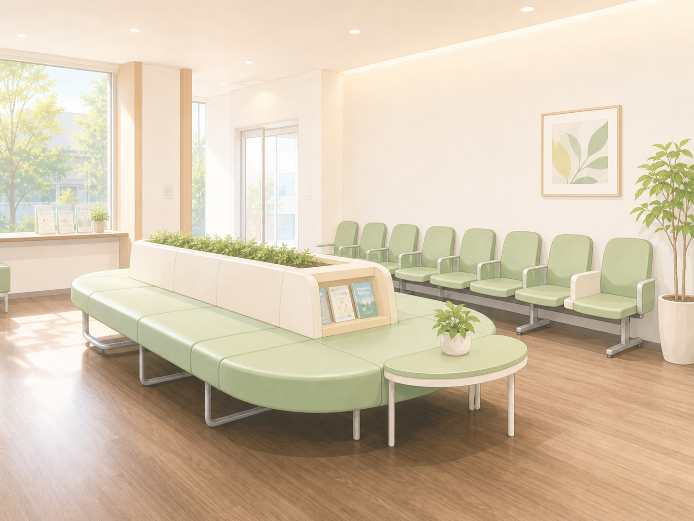
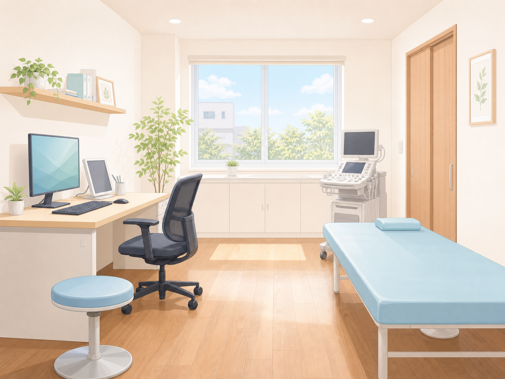
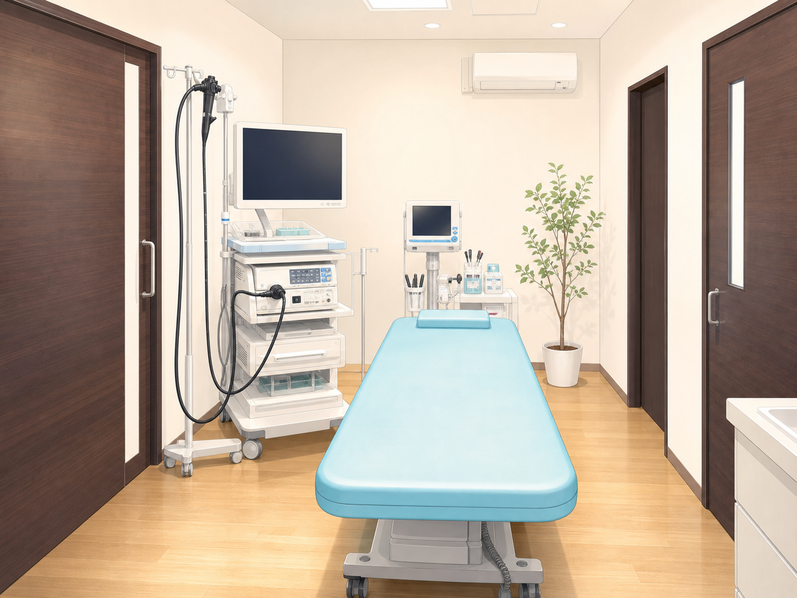
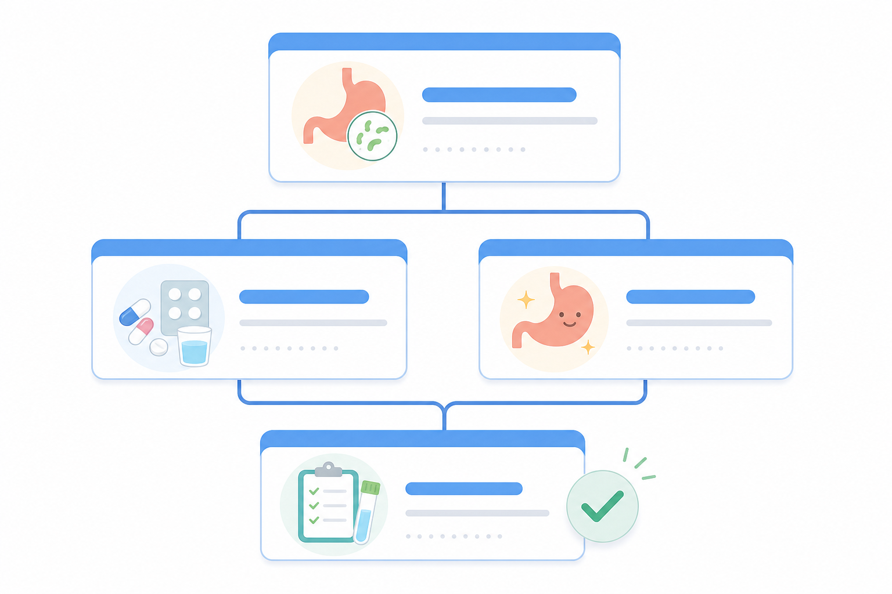

外観・駐車場
駅から近く、車でも来院できます
浄水駅から徒歩約2分。29台分の専用駐車場があります。

豊田市浄水町の内科・消化器内科
はじめての方も、受診前に迷わない。
浄水駅から徒歩約2分。 診療時間、アクセス、検査内容、 持ち物を来院前に確認できます。 気になる症状や胃腸の相談も お電話ください。
受診前のお知らせ
来院前の確認

外観・駐車場
浄水駅から徒歩約2分。29台分の専用駐車場があります。

待合室
初めての方も、待合室の雰囲気を事前に確認できます。

診察室
気になる症状、検査の希望、健康診断後の相談などをお聞きします。

内視鏡室
胃カメラ・大腸カメラを希望する方が、来院前に雰囲気をつかめます。
いつから、どんな症状があるか。受診時に気になることをお聞かせください。
必要に応じて院内検査や内視鏡検査を行い、早めの対応につなげます。
検査結果や治療方針を説明し、納得して次の対応を決められるようにします。
Message
豊田市浄水町に内科，消化器内科で平成25年10月に開院しました おおくぼ内科クリニックです。
当院が心がけているのは患者さまのお立場に立って診療させていただくことです。症状を十分お聞きして的確に診断し、治療方針をご納得いただけるまでご説明致します。
高血圧など生活習慣病の予防と治療,健康診断にも力を入れていきますので、「皆様のかかりつけ医」としてどんなからだの小さな心配事もご相談して頂ければ幸いです。
Clinic
| 診療時間 | 月 | 火 | 水 | 木 | 金 | 土 | 日 |
|---|---|---|---|---|---|---|---|
| 9:00～12:00 | ○ | ○ | ○ | ○ | ○ | ○ | ／ |
| 16:00～19:00 | ○ | ○ | ／ | ○ | ○ | ／ | ／ |
初診の方の受付時間 午前8時45分～11時30分 / 午後15時45分～18時30分
再診の方の受付時間 午前8時45分～11時45分 / 午後15時45分～18時45分
【休診日】水曜午後・土曜午後・日曜祝日
 院内緊急検査発熱・炎症・貧血などを当日確認
内視鏡検査のご紹介胃カメラ・大腸カメラを受ける方へ
院内緊急検査発熱・炎症・貧血などを当日確認
内視鏡検査のご紹介胃カメラ・大腸カメラを受ける方へ

ピロリ菌のはなし検査・除菌療法・除菌判定